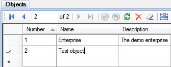

This article describes how to configure communication with devices using Modbus protocol. Simple and robust, Modbus has since become a de facto standard communication protocol, and it is now a commonly available means of connecting industrial electronic devices (see Wikipedia). Rapid SCADA supports Modbus RTU, ASCII and TCP modes.
The general sequence of configuring:
The following is a step by step guide to setup a new Modbus device. To ensure that the process of adding the device completely coincides with the text of the article, you have to install Rapid SCADA with the default configuration.
Editing the configuration database is performed using SCADA-Administrator.
Run SCADA-Administrator. Open Objects table and add a new line for the object 2 “Test object” (see Figure 1). Then open Communication lines table and add the line 4 “Test line” (see Figure 2). After that open Devices table and add the device 41 “Test device” (see Figure 3).
Fill the following fields for the device (see Figure 3):
| Device type: | Modbus |
| Address: | Modbus address of your device, for example, 1 |
| Call number: | IP address, if the device is connected via Ethernet |
| Communication line: | "Test line", which was recently created |

Figure 1. Adding an object